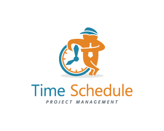

  <nav class="navbar navbar-expand-lg navbar-light bg-light">
    <a class="navbar-brand" routerLink="home">
      
    </a>
    <a class="navbar-brand" routerLink="home">TIME SCHEDULE</a>
    <button class="navbar-toggler" type="button" data-toggle="collapse" data-target="#navbarNav" aria-controls="navbarNav" aria-expanded="false" aria-label="Toggle Navigation">
      <span class="navbar-toggler-icon"></span>
    </button>
    <div class="collapse navbar-collapse ml-3" id="navbarNav">
      <ul class="navbar-nav mr-auto">
        <li class="nav-item active ml-2">
          <a class="nav-link" routerLink="home"><u>H</u>ome</a>
        </li>
        <li class="nav-item ml-2">
          <a class="nav-link" routerLink="today"><u>T</u>oday work</a>
        </li>
        <li class="nav-item dropdown ml-2">
          <a class="nav-link dropdown-toggle" href="#" id="navbarDropdown" role="button" data-toggle="dropdown" aria-expanded="false">
            <u>W</u>ork
          </a>
          <div class="dropdown-menu" aria-labelledby="navbarDropdown">
            <a class="dropdown-item" routerLink="work/add">Add work</a>
            <a class="dropdown-item" routerLink="work/remove">Remove work</a>
            <a class="dropdown-item" routerLink="work/complete">Completed work</a>
          </div>
        </li>
        <li class="nav-item ml-2">
          <a class="nav-link" routerLink="contact"><u>C</u>ontact</a>

        </li>
      </ul>
    </div>
    <div *ngIf="navbarStatus; else profileBlock">
      <a class="nav-link btn btn-success" routerLink="user/login"><u>L</u>ogin</a>
      <a class="nav-link btn btn-primary" routerLink="user/signin"><u>S</u>ign</a>
    </div>
    <ng-template #profileBlock>
      
      <a class="nav-link btn btn-warning" routerLink="user/profile">{{userProfilename}}</a>
    </ng-template>
  </nav>


